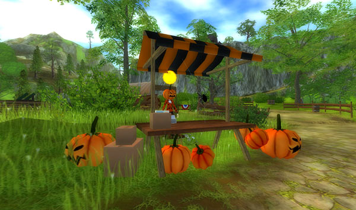
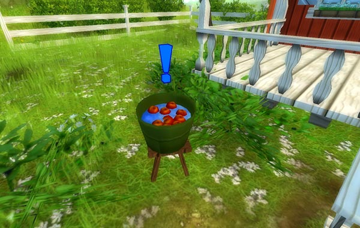

A LEGIJESZTŐBB HALLOWEEN!
Úgy tűnik a Star Stable-ből Scare Stable válik a héten, mivel ez lesz minden idők legijesztőbb Halloweenja!
Szellemes új Halloweeni küldetés!
Rob és Bob portyázni voltak, és szereztek valamit, ami több, mint aminek látszik, és őszintén szólva elég ijesztő... Látogass el a Goldenhill völgyébe és derítsd ki, mi történt, de légy óvatos! Többé nem biztonságos a Goldenleaf erdőbe való belépés. Legalábbis akkor nem, amikor Ő ott van!

Figyelmeztetés:
A küldetéssorozat roppant szórakoztató, viszont elég izgalmas, helyenként ijesztő. Ha úgy érzed, főleg a fiatalabb játékosaink, hogy egyedül nem mersz nekiállni a feladatoknak, azt javasoljuk, kérj meg valakit otthon, hogy segítsen Neked! És ne feledd, ez csak egy történet :)
A küldetéssorozat megkezdéséhez Star Ridernek kell lenned, és korábban segítened kellett Bob-on, amikor vízbe esett
Ijesztően poénos Halloweei ruhák!
Itt a lehetőség, hogy tetőtől- talpig Halloweeni ruhákat ölts magadra! A bevásárlóközpontban, és a felbukkanó Halloweeni üzletekben fantasztikus új, szellemes divatú ruhákat találsz.

Hajmeresztő, különleges sminkek!
Ahhoz, hogy a sminked is passzoljon a Halloweeni ruháidhoz, ugorj be egy szalonba, és varázsolj az arcodra is Halloweeni kinézetet!
Poénos alma horgászat
Halloween nem lenne Halloween egy kis alma horgászat nélkül! Ha sikerül megszerezned az almát, és ezzel nyerned, nem csupán egy almát kapsz majd, egyéb ajándékban is részesülsz. Talán valamit szerezhetsz a lovadnak? Ki tudja?!

A különleges ajándékok minden nap máshol találhatók, lovagolj körbe naponta Jorvikon, hogy felfedezd a helyszíneket!
Hátborzongató, kísértetek, vagy mégsem?!
Sajnos a szellemirtóknak egyelőre nincs irodájuk Jorvikon, ezért szellemek jelenhetnek meg Jorvik különböző pontjain. A szellemhangok alapján könnyen megtalálhatod ezeket a rejtőzködő lényeket!

Amint meghallasz egy szellemet, próbáld meg megtalálni. Amíg egy szellem közelébe nem érsz, láthatatlan lesz, aztán hirtelen BOO! Máris ott van egy előtted. Amint megtalálsz egyet, máris ajádékban részesülsz. Ez lehet egy kis meglepetés lovadnak, esetleg valami ehető, vagy egy kis ajándék neked. Az idei meglepetés ajándékok teljesen újak!
A szellemes küldetések megkezdéséhez beszélj Mrs Holdsworth-al- ő megmondja mit kell tenned!
Lovas piac
Eddie és Ferdinand összecsomagoltak, Eddie elárulta nekünk, nem szeretné, ha a szellemek ijesztgetnék lovaikat.
a Star Stable csapata